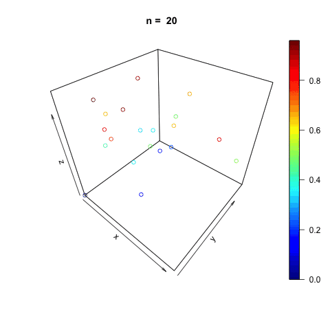
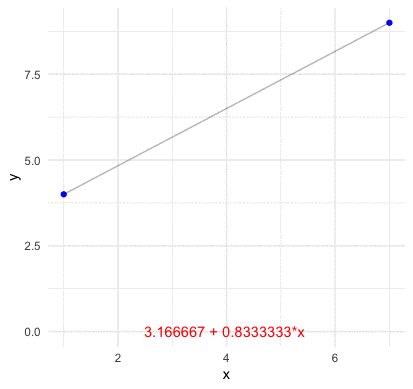
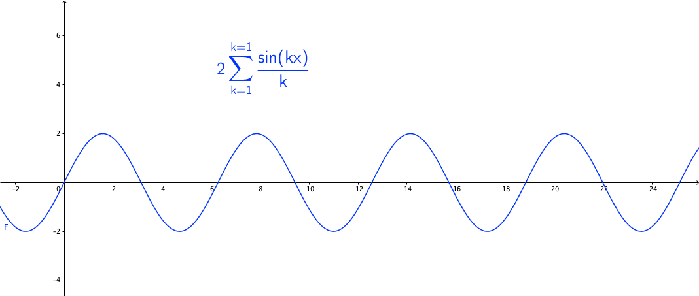
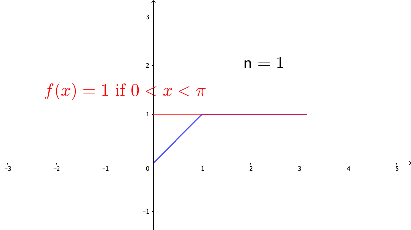
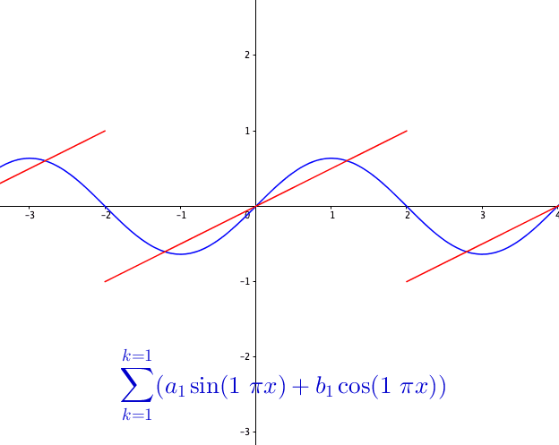

The term representation can signify either the awareness of an individual thing or the thought of a concept. In particular, the representation is considered ontologically prior to the realizations, so for two relational truths, we can think them rest on facts of the same representational nature. We do a correct representation of two different things existing outside of us because they are two faces of the same representation. This is known as the representational theory of truth.
For the Christian thinkers of the 17th century, the domain of representation had to be ontologically dependent upon and posterior to the existence of God (the supreme being), because under the ground of representational theory of truth it was a non-deceiving, benevolent God who guaranteed that different realizations were from the same representation.302 For example, a central doctrine of Leibniz’s metaphysics is about the ontological priority of representation in God’s mind. Leibniz argued that the existence of the representation in God’s mind is independent of the possible realizations of them. The representations of all the representors are, therefore, coherently tied together by pre-established harmony. “Harmony, which God has pre-established by the most beautiful and the most admirable of all his productions; whereby every simple substance is by its nature, (if one may so say,) a concentration, and a living mirror of the whole Universe, according to its point of view, which is likewise one of the most beautiful and most undeniable proofs of the existence of God; since none but God, viz. the universal Cause, can produce such a harmony of things. But God himself cannot perceive things by the same means by which he makes other beings perceive them. He perceives them because he is able to produce that means. And other beings would not be caused to perceive them, if he himself did not produce them all harmonious, and had not therefore in himself a representation of them; not as if that representation came from the things, but because the things proceed from him and because he is efficient and exemplary cause of them.” - Leibniz (2000) (section 87) In this case, representation was treated as the ultimate cause for the right correspondence amongst different realizations, and as the ontological causality for bridging any epistemological gap of different truths.
Kant and Arthur Schopenhauer contribute to developing the theory of representation. For Kant, the world of our daily experience does not represent how things really are, but only represents how reality appears to us through our visions. Schopenhauer described this situation by which it is now known as epistemological dualism, where the duality consists of subject (a thinking entity) and object (a thing external to the thinking entity). Epistemological dualism states that one does not (and can not) perceive the external world directly; instead, one knows only one’s ideas or interpretations of objects in the world. Thus, a “barrier” or a “veil” of perception prevents first-hand knowledge of anything beyond it. The representation is such a veil: it consists of our mental images of the external objects. Our minds perceive representations of objects.303 At the beginning of his book, Schopenhauer (1966) wrote, “The world is my representation.” Here, the representation is an object (the world) appears in a subject (his mind).
In other words, the representation connects one’s “visualized” reality with the external world where other living organisms and substances exist. Let’s go back to Galileo’s concern of two relational truths. If one truth is supposed to exist as a subject (in our mind) and another related truth as an object (outside the mental world), then we may expect one representation to express both of them dually.
Number representation
For Leibniz, the existence of an external world representation is guaranteed by the fact that God could not be a deceiver creating only us and making us represent in a vacuum of other substances. He believes that what we represent within has solid ground, a basis.304 “The nature of every simple substance, Soul, or true monad, being such, that its following state is a consequence of the preceding one; here now is the cause of the harmony found out. For God needs only to make a simple substance become once and from the beginning, a representation of the universe, according to its point of view; since from thence alone it follows, that it will be so perpetually; and that all simple substances will always have a harmony among themselves, because they always represent the same universe.” - Leibniz (2000) (section 31)
However, the notion of Leibniz’s representation is too general to be specifically explained on a concrete basis. To limit the scope, we should restrict our attention to a smaller domain. The representation of numbers may be a good starting point. Any number comes with a basis. For example, the number \(123\) has a linear expression in terms of the underlying functions of the basis (here, powers of \(10\)): \[123 = 1\times(10)^2 + 2\times(10)^1 + 3\times(10)^0.\]
Such an expression can be formally stated as a modular representation.305 It studies linear representations of some finite sets called groups over a field. In this \(123\) example, the modular representation says that we can represent any number in the field \(\mathbb{Q}\), (including \(123\)) by the integers of the finite set \(\{0,1,\dots,10\}\). We will give the definition of groups in sec[?]. A modulus is an integer divisor. If two integers \(x\) and \(y\) only differ by a multiple of a modulus \(m\), such that \(x-y = km\) for any integer \(k\), then we write \(x=y \mbox{ mod } m\), and say that \(x\) and \(y\) are congruent modulo \(m\), or say that \(x\) modulo \(m\) gives the residue \(y\). For example, the coefficient \(3\) in \(123\) is the residue of \(123\) modulo \(10\), namely \(123 = 3 \mbox{ mod } 10\), as \(123 - 3 = 12\times 10\).306 In fact, we always implicilty use this modulo operation in our daily life. For example, when we say it is Sunday, we simply represent the exact date in a finite set of Monday,…, Sunday. The coefficients from the base-\(10\) representation are simply the residues in the modular representation under the modulo \(10\).307 Each coefficient from the base-\(10\) representation of \(123\) comes from \[ \begin{align*} 123 &= 3 \mbox{ mod } 10, \\ \frac{123 - 3}{10} = 12, &\,\,\, 12 = 2 \mbox{ mod } 10, \\ \frac{12- 3}{10} = 1, & \,\,\, 1 = 1 \mbox{ mod } 10. \\ \end{align*} \] Note that we need to get rid of the coefficient(s) of the previously used basis function(s) and represent the remaining value by the current basis function in each step.
The above representation of \(123\) is based on the decimal numeral system (base-\(10\) numeral system). The modular representation enables us to change the basis of the representation. For example, one can represent any decimal number under the binary numeral system (base-\(2\) numeral system), namely to represent the object \(123\) under the modulus \(2\). While the object remains the same, the number \(123\) in the base-\(2\) numeral system will be represented by \(1111011\), where each binary figure comes from the following modular representation: \[123 = \underline{1}\times(2)^6 + \underline{1}\times(2)^5 + \underline{1}\times(2)^4 + \underline{1}\times(2)^3 \\ + \underline{0}\times(2)^2 + \underline{1}\times(2)^1 + \underline{1}\times(2)^0.\]
Compute the modular representation of 123
These alternate representations allow us to consider the same object on different bases, power functions of \(10\) or power functions of \(2\).308 The choice of a basis can have a dramatic impact on the efficiency of computation, as well as in the amount of storage taken up by representation, and above all, in revealing deeper properties of the set as a whole. Thus, the selection of a basis is crucial: the decimal number system is a notable example of such a selection in human evolution.
Apart from the number systems, we will see representations in various settings. Generally speaking, representations of the numerical objects can be thought of as the construction of a “basis” that can capture the general features of these objects. For example, the representation of a particular vector space is to form a basis that can generate all the remaining elements in this space.309 Also, we can think that the distinction between subject and object gives us two different sets. Thus, a basis exists in the subjective set, and another basis exists in the objective set. A representation establishes a correspondence of these two bases so that they can explain the same realizations, but they are essentially different things. In a nutshell, representation theory in practice is often thought of as the theory for the basis (or bases) construction.
Pseudo-random numbers’ generator
Even though the numerical objects being represented can be diverse, the representation provides a formalism to describe various forms of objects with respect to a well-defined basis.310 In the current AI era, the numerical objects can range from the task commands of robotics and biosensors to data such as documents or images in the information-retrieval systems. These objects will be quantified and stored as numerical states in discrete or continuous state spaces for the representation. The discovery of the representation of numerical objects unifies the issues that would otherwise be somewhat disparate.311 Let’s look back to figure \(123\). When you read the base-\(10\) numeral expression, \(123\), you can immediately sense the ordering structure, a monotone trend from the beginning position to the end position. But you probably cannot sense anything from the base-\(2\) numeral expression, \(1111011\). Given that the two expressions come from the same object under the modular representation of different bases, we can see that the representations reveal different degrees of information regarding the object’s structure.
Another application using the modular representation is to generate pseudo-random numbers. Whether a true random object that exists in the world is a philosophical or theological question.312 According to some determinism and theological arguments, the true randomness only occurs in the state with no divine providence: the universe is full of ordered, determined substances, and the seemingly random events merely reflect the ignorance of divine signs or interventions. In other words, they suppose invisible orders hidden beneath the disordered representational surfaces. But at least we can answer this question - deny the existence of randomness - for all computational programs, as so far all random numbers generated by the computers are pseudo (in the circuits of electric currents).
One of the simplest algorithms to generate pseudo-random numbers is called the linear congruential generator.313 Generators and bases serve similar purposes in most circumstances. The term generator or generating set refers to the situation that a smaller set of objects, together with a set of operations that can be applied to it, results in the creation of a larger collection of objects. The larger set is then said to be generated by the smaller set. One can think the basis of a vector space as the smallest generator whose components are linearly independent. The basic idea is to form a “disordered” dynamics thorough a linear dynamical system of finite states. The linear congruential generator represents any sequence of numbers on a new base through the modulo operation so that the order embedded in the old sequence is shattered. The numbers in the new sequence may “seem” to follow an “unordering” pattern, which creates the illusion of randomness.
The linear system of linear congruential generator follows \[x_t = (a x_{t-1} + c ) \, \mbox{mod} \, m,\] which is completely deterministic. The modulus \(m\), the multiplier \(a\), and the increment \(c\) are the dynamical system parameters.314 Different computer programs usually use different specified parameters for their generators. Very often, the modulus \(m\) is chosen for the storage-bit of the central processor i.e., \(m=2^{32}\) for a standard \(32\)-bit data storage system. In Borland C or C++, \(a\) is \(22695477\), and \(c\) is \(1\). Note that some parameters may create ordering patterns, such as the cyclical pattern, for the sequence; in this case, the parameters are not suitable for generating the pseudo-randomness. The following program generates \(5\) pseudo-random numbers using this generator. In figure 14.1, we fill the cube with uniformly random vectors created by the same generator.
x=rep(0,10)
x[1] = 100 # seed
for(t in 2:10){x[t] = (1664525 * x[t-1] + 1013904223) %% 2^32 }
x/(2^32)## [1] 2.328306e-08 2.748232e-01 3.489434e-01 2.903610e-01 3.695035e-01
## [6] 3.070315e-02 3.928942e-01 4.474292e-01 2.553318e-01 3.792914e-01Figure 14.1: Pseudo random numbers uniformly distributed in a cube
Code for plotting
The first value of the sequence is called the seed of the generator. Any pseudo-random number of the sequence is created from such a fixed specific seed. Together with the generator, the seed constructs the implicit order hidden in the presence of the pseudo-randomness. Since the generator is often given as a fixed function (fixed parameters), the variations of the pseudo-random outputs are caused by the changes of the seeds.
In the rest of the chapter, we will confront representations of other quantitative objects. But at the moment, I want to discuss an attempt to discover a general “basis” that relates to Leibniz’s view of representation. Such a “basis” is constructed by the sixty-four hexagrams from I Ching (Book of Changes).
The importance of the I Ching in Chinese philosophy cannot be overemphasized. However, the practical uses of the book were mainly for divination. The sixty-four hexagrams in I Ching (like the modulo operation) is to divide all possibilities arising in the changes into sixty-four modules. That is to say when an object (event) appears, a representation of these hexagrams (interpretations) should be able to explain the object (event). Thus, we can think that the book is to create a representation for all kinds of changes; and the sixty-four hexagrams, along with the interpretations attached to them, can be thought of as the “basis” of the I Ching’s system of the world.
The ordering system of I-Ching’s basis is mathematically logical in the progression from one hexagram to the next315 In fact, these hexagrams’ ordering system corresponds perfectly with the binary number system (of \(2^6=64\)) invented by Leibniz. It is known that the ordering system of I Ching was brought to Leibniz’ attention by Joachim Bouv, a Jesuit missionary in China.; it is not logical, however, in its progression from one interpretation to the next. One needs to rely on some random generator to sort out the logic, which we now call divination.316 When one tries to represent various logically unrelated objects, one has to shatter the original order to create the “wanted” or “logical” ones. In this case, one needs a random (or pseudo-random) mechanism to generate the “wanted” hexagrams (interpretations). Such a procedure is now thought of as divination.
I Ching divination
Rather than seek a deeper understanding of randomness, the traditional Chinese philosophy turned to the research on interpreting the (pseudo) random signs of hexagrams, and the studies of I Ching emphasized making various divine advice and guidance for such interpretations. Perhaps, this kind of tendency abolished the emergence of epistemology and logic in Chinese philosophy.
Many quantitative objects have well-established theoretical bases on which we expect to find the representations. For example, for any finite dimensional vector \(\mathbf{x}\in\mathbb{R}^{n}\), the standard unit vectors \(\{\mathbf{e}_{i}\}_{i=1}^{n}\) where \(\mathbf{e}_{1}=[1,0,\cdots,0]^{\top}\),…,\(\mathbf{e}_{n}=[0,\cdots,0,1]^{\top}\) serve the (default) basis in the representation: \[\mathbf{x}=x_{1}\mathbf{e}_{1}+\cdots+x_{n}\mathbf{e}_{n}=\sum_{i=1}^{n}x_{i}\mathbf{e}_{i},\] namely, the linear combination of \(\{\mathbf{e}_{i}\}_{i=1}^{n}\).
This representation is useful for describing a discrete point from the coordinate-dependent finite-dimensional linear algebraic setting. But we know that many interesting discrete objects are in fact the realizations of their underlying continuous counterparts. For example, \(n\)-points may come from the same function under different inputs. For representing a continuous object, such as a function, we need to extend our concerns to the bases from the infinite-dimension. A basis function provides a generalization of basis vectors to the vector space of functions.321 Every function in such a function space can be represented as a linear combination of basis functions, just as every vector in a vector space can be represented as a linear combination of basis vectors. A tractable topological structure for studying those bases is a function space called inner product space.
Before going the abstract construction of the inner product space, we should grab a concrete idea of how a basis function look like in the vector space. Consider \(n\) points of two vectors \(\mathbf{x}=[x_{1},\dots,x_{n}]\) and \(\mathbf{y}=[y_{1},\dots,y_{n}]\) on the plane (no two of which are aligned vertically). We assume that a function \(f:\mathbb{R}\mapsto\mathbb{R}\) go through these \(n\) points such that \(y_{i}=f(x_{i})\). For any two points \((x_{1},y_{1})\) and \((x_{2},y_{2})\), we know that a line with the slope \((y_{2}-y_{1})/(x_{2}-x_{1})\) can go through these points. Thus the representation of the line \(y=f(x)\) connecting these two point is \[ \begin{align*} f(x) &= \frac{y_{2}-y_{1}}{x_{2}-x_{1}}(x-x_{1})+y_{1}=y_{1}+(y_{2}-y_{1})\frac{x-x_{1}}{x_{2}-x_{1}}\\ &= y_{1}\frac{x-x_{2}}{x_{1}-x_{2}}+y_{2}\frac{x-x_{1}}{x_{2}-x_{1}}=y_{1}L_{2,1}(x)+y_{2}L_{2,2}(x) \end{align*} \] where the polynomials \[L_{2,1}(x)=\frac{x-x_{2}}{x_{1}-x_{2}},\; L_{2,2}(x)=\frac{x-x_{1}}{x_{2}-x_{1}}\] are basis functions for the two coefficient values \(y_{1}\) and \(y_{2}\), respectively. By inducing the same form of the polynomials, we can construct the basis functions for \(n-1\) points as322 Note that the line is also a polynomial with degree one. Because \(3\) points are sufficient to define a parabola, \(4\) points are sufficient to define a cubic curve and so on, we expect \(n\) points to define a polynomial of degree \(n-1\). \[\begin{align*} L_{n,k}(x)=&\frac{(x-x_{1})\cdots(x-x_{k-1})(x-x_{k+1})\cdots(x-x_{n})}{(x-x_{1})\cdots(x_{k}-x_{k-1})(x_{k}-x_{k+1})\cdots(x_{k}-x_{n})}\\ =&\frac{\prod_{j=1,j\neq k}^{n}(x-x_{j})}{\prod_{j=1,j\neq k}^{n}(x_{k}-x_{j})}\end{align*}\] such that \[f(x)=y_{1}L_{n,1}(x)+\cdots+y_{n}L_{n,n}(x)=\sum_{k=1}^{n}y_{k}L_{n,k}(x).\]
Figure 14.2: Lagrange polynomial basis four points
The representation is a linear combination of the polynomials, \(L_{n,k}(x)\), called Lagrange basis polynomials.323 The function \(\sum_{k=1}^{n}y_{k}L_{n,k}(x)\) is called the Lagrange polynomials. Suppose all \(x_{i}\) are in the set \(\mathcal{X}\), if this polynomial \(\sum_{k=1}^{n}y_{k}L_{n,k}(x)\) is used to approximate some unknown function \(g(x):\,\mathcal{X}\mapsto\mathbb{R}\), we call the procedure interpolation. If the polynomial \(\sum_{k=1}^{n}y_{k}L_{n,k}(x)\) approximates \(g(x)\) for \(x\not \mathcal{X}\), we call the procedure extrapolation. By comparing the representation to that of decimal numbers, we can see that the basis function \(L_{n,k}(x)\) plays a similar role as the function \(10^{i}\) in the modular representation. The representation also reveals that the monomials can also perform as a basis (called monomial basis) as \[\sum_{k=1}^{n}y_{k}L_{n,k}(x)=\sum_{j=0}^{n-1}c_{j}x^{j}\] for some coefficients \(c_{0},\dots c_{n-1}\).324 To find the coefficients \(c_{j}\), one needs to solve \(\sum_{j=0}^{n-1}c_{j}x_{i}^{j}=y_{i}\) for \(i=1,\dots n\) by inverting the Vandermonde matrix of \(x^{j}\).
Code
Although Lagrange polynomials illustrate us a class of basis functions, the functions do not exactly comparable to the standard unit vectors \(\{\mathbf{e}_{i}\}_{i=1}^{n}\) in the discrete setting. Note that \(\{\mathbf{e}_{i}\}_{i=1}^{n}\) is not only a basis, but an orthonormal basis. That is, \(\mathbf{e}_{i}^{\top} \mathbf{e}_{j}=\langle \mathbf{e}_i,\mathbf{e}_j\rangle =0\) for \(i\neq j\) and \(\|\mathbf{e}_{i}\|=\sqrt{\left\langle \mathbf{e}_i,\mathbf{e}_i\right\rangle} =1\) for any \(1 \leq i\leq n\). The Lagrange basis polynomials are neither orthogonal nor orthonormal.
To obtain orthonormal basis functions, we need to alter the way of constructing the basis functions. Recall in chapter 13.1 and 12.2, the orthonormal basis vectors appear as the eigenvectors of some specific matrices. As functions are not vectors, we cannot follow the exact procedure of eigen-decomposition, but as functions behave similarly to the infinite large vectors, we can follow a similar procedure of eigen-decomposition, called eigenfunction-eigenvalue decomposition: \[ \mathbf{T}f(x) = \lambda f(x)\] where \(\mathbf{T} : \mathcal{X}\rightarrow \mathcal{Y}\) is a linear operator from a vector space \(\mathcal{X}\) to another vector space \(\mathcal{Y}\), \(\lambda\) and \(f(\cdot)\) are the eigenvalue and eigenfunction of the linear operator.
Consider the following differential equation problem: \[ \begin{equation} -\frac{\mbox{d}^{2}f(x)}{\mbox{d}x^{2}}=\lambda f(x). \tag{14.1} \end{equation} \] This is an eigenfunction-eigenvalue problem with the linear operator \(\mbox{d}^2(\cdot)/\mbox{d}t^2\). The solutions \(f_{1}(x)=\cos\theta x\) and \(f_{2}(x)=\sin\theta x\) of the differential equation are eigenfunctions associated with the eigenvalue \(\lambda=\theta^{2}\).325 We can easily verify the solutions by substitution \[\begin{align*} - \frac{\mbox{d}^2 \cos(\theta x)}{\mbox{d}x^2}&= \frac{\mbox{d}\theta \sin(\theta x)}{\mbox{d}x}= \theta^2 \cos(\theta x),\\ - \frac{\mbox{d}^2 \sin(\theta x)}{\mbox{d}x^2}&= - \frac{\mbox{d}\theta \cos(\theta x)}{\mbox{d}x}= \theta^2 \sin(\theta x). \end{align*}\]
The arbitrary eigenvalue \(\lambda=\theta^{2}\) may complicate the situation.326 The continuity of the spectrum actually brings in some serious technical difficulties. The situation is similar to the need of defining a Lebsgue measure for the uncountably subsets in the power set of \(\mathbb{R}\). Instead of dealing with the uncountability, we can restrict the values of \(\lambda\) in \(\mathbb{Z}\) so that there are only countable many eigenvalues. We will come back to the continuous spectrum when we discuss the appearance of chaos. For the moment, let’s restrict our attention to three neat expressions.
1). By setting the eigenvalues to \(\lambda=4k^{2}\pi^{2}\) for any integer \(k\), we can refine the set of eigenfunctions to \(\sin(2\pi k x), \cos(2\pi k x)\) for \(k=1,2,\dots\).
2). Similarly, if we set \(\lambda=k^{2}\) to a squared integer, then the set of eigenfunctions shrinks to \(\sin( k x), \cos( k x)\) for \(k=1,2,\dots\).
3). As the eigenvectors are not necessarily real, we can express \(\{\sin(kx)\}_{k\in\mathbb{Z}}\) and \(\{\cos(kx)\}_{k\in\mathbb{Z}}\) in a compact form \(\{\mbox{e}^{\mbox{i} kx}\}_{k\in\mathbb{Z}}\) by introducing the imaginary unit \(\mbox{i}\). The equation (14.1) becomes \[-\frac{\mbox{d}^{2}y(x)}{\mbox{d}x^{2}} = -\frac{\mbox{d}^{2}\mbox{e}^{\mbox{i}k x}}{\mbox{d}x^{2}} = - \mbox{i}k\frac{\mbox{d}\mbox{e}^{\mbox{i}k x}}{\mbox{d}x} = k^2 y(x).\] It shows that \(\{\mbox{e}^{\mbox{i} k}\}_{k\in\mathbb{Z}}\) are the eigenfunctions. Also when \(\lambda=4k^{2}\pi^{2}\), it is easy to see that \(\{\mbox{e}^{2\pi k \mbox{i}}\}_{k\in\mathbb{Z}}\) are the eigenfunctions.
As you can see, these three categories are correlated. They are called the Fourier bases.327 An analysis developped from these bases is called the Fourier analysis. It not only became the crucial tool in mathematics, but also played a leading role in engineering and technology, ranging from signal processing (consumer electronics), time-series analysis (weather prediction) to medical images (Computerized Axial Tomography scanners). If we can verify the orthogonal property for any of the trinity, then the result can be simultaneously extended to the rest.
Eigenvectors perspective
Before showing the orthogonality of those eigenfunctions, we need to rigorously define what does orthogonality means for functions. For vectors, saying that \(\mathbf{x}\) is orthogonal to \(\mathbf{y}\) induces \(\mathbf{x}^{\top} \mathbf{y}=\left\langle \mathbf{x},\mathbf{y} \right\rangle =0\). So the orthogonality comes with the zero value of an inner product. But the inner product as a product of real-valued vectors given in chapter 10.1 is not suitable for evaluating the products of complex-valued vectors or functions. The following axioms of inner products can help us to construct inner products for various objects of our interests.
Positive definiteness : \(\langle f,f \rangle \geq 0\) for all \(f\in\mathcal{V}\) and \(\langle f,f \rangle = 0\) only if \(f = 0\).
Linearity at the first argument : for any scalar \(a\in\mathbb{F}\), \(\langle a f, g\rangle =a\langle f,g\rangle\); for any \(q\in\mathcal{V}\), \(\langle f + q, g\rangle =\langle f, g \rangle +\langle q, g\rangle\).328 Note that if we only consider real number field \(\mathbb{R}\) for the inner product \(\langle \cdot,\cdot \rangle: \mathcal{V}\times \mathcal{V} \rightarrow \mathbb{R}\), then the axiom 2) becomes symmetry such that \(\langle f, g \rangle= \langle g, f \rangle\), and the axiom 3) is bilinear \[ \begin{align*} \langle a f + b q, g\rangle & = a \langle f, g \rangle + b \langle q, g\rangle \\ & = \langle f + q, (a+b)g\rangle \end{align*}\] for \(a,b\in\mathbb{R}\) because of the symmetry property. For \(\mathbb{C}\), the bilinear forms become conjugate linear in one argument.
An inner product space is a vector space with an inner product.
In chapter 11.4, we have seen that the set of all continuous real-valued functions \(f:[a,b]\rightarrow\mathbb{R}\) is a vector space denoted by \(\mathcal{C}[a,b]\). Both \(\sin(kx)\) and \(\cos(kx)\) as the eigenfunctions of equation (14.1) are continuous and periodic, so they belong to the vector space \(\mathcal{C}[0,\pi]\).
With above axioms, we can define their inner product for any continous function \(f\) and \(g\) on \([a,b]\): \[\langle f, g \rangle =\int_{a}^{b} f(x) g(x) \mbox{d}x\] Similar to using the inner product for inducing vector norms, the inner product of any continous functions \(f\in \mathcal{C}[a,b]\) gives rise to a function norm, called \(L_2\)-norm:329 One can extend this defintion to \(L_p\)-norm of functions \[\|f\|_p = \left[\int_{a}^{b} |f(x)|^p \mbox{d}x \right]^p.\] But they don’t necessarily have associated inner products except the case \(p=2\). \[\sqrt{\langle f, f \rangle} =\left[\int_{a}^{b} |f(x)|^2 \mbox{d}x \right]^{\frac{1}{2}}= \|f\|.\]
Consider the eigenfunctions of equation (14.1). Note that \(\sin(kx)\) is continuous and periodic, so it belongs to the vector space \(\mathcal{C}[0,\pi]\). For eigenfunctions of \(\{\sin(kx)\}_{k\in\mathbb{Z}}\) in \(\mathcal{C}[0, \pi]\), we can see that each pair of \(\{\sin(kx)\}_{k\in\mathbb{Z}}\) are orthogonal. \[\begin{align*} \langle \sin(kx), \sin(nx) \rangle &=\int_{0}^{\pi}\sin(kx)\sin(nx)\mbox{d}x\\ &=\int_{0}^{\pi}\left[\frac{1}{2}\cos(n-k)x-\frac{1}{2}\cos(n+k)x\right]=0, \end{align*}\] for \(n\neq k\).330 The second equality comes from \[\int_{0}^{\pi}\cos(n\pm k)x=\left.\frac{\sin(n\pm k)x}{n\pm k}\right|_{0}^{\pi}=0-0.\] By mutiplying each \(\sin(kx)\) with the norm \(\|\sin(kx)\|\), we can show that \(\{\sin(kx)/\|\sin(kx)\|\}_{k\in\mathbb{Z}}\) is orthonormal: \[\left\langle \frac{\sin(nx)}{\|\sin(nx)\|},\frac{\sin(kx)}{\|\sin(kx)\|}\right\rangle =\begin{cases} 0, & \mbox{ if }n\neq k,\\ 1, & \mbox{ if }n=k. \end{cases}\]
Similarly, we can verify that the eigenfunctions of \(\{\cos(kx)\}_{k\in\mathbb{Z}}\) in \(\mathcal{C}[0, \pi]\) are orthogonal too.331 \[\begin{align*}\int_{0}^{\pi}\cos(n\pm k)x=\\ \left.\frac{\sin(n\pm k)x}{n\pm k}\right|_{0}^{\pi}=0-0\end{align*}\] We can extend the representation to incoporate both classes of the eigenfunctions on every \(2\pi\) interval where all sines and cosines are mutually orthogonal:332 Over the half-period \([0, \pi]\) , the sines are not orthogonal to all the cosines. \[\begin{align*}\left\langle \sin x,\,\cos x\right\rangle &=\int_{-\pi}^{\pi}\sin(x)\cos(x)\mbox{d}x \\&=\frac{1}{2}\left.\sin^{2}x\right|_{-\pi}^{\pi}=0.\end{align*}\] This result allows us to represent functions in \(\mathcal{C}[-\pi, \pi]\) through the following series \[\begin{align} f(x) &=a_{0}+\sum_{k=1}^{\infty}a_{k}\cos kx+\sum_{k=1}^{\infty}b_{k}\sin kx \tag{14.2} \\ & = \sum_{n=-\infty}^{\infty}c_{n}\mbox{e}^{\mbox{i}nx} \tag{14.3} \end{align}\] called the Fourier series : (14.2) is the trigonometric form and (14.3) is the exponential form.333 Note that the coefficients in the exponential form need to be complex values, while there are not necessarily the case for the coefficients in the trigonometric form. Fourier’s insight was to transform data defined over time or space into a frequency-oriented representation. This insight has had a lasting impact in mathematics, science, and technology for two centuries.
Orthonormality of exponential forms in the Fourier series
All the representations we have seen so far contain two components: the basis functions and the coefficients. Furthermore, it seems a relationship existing between these two components. For example, when we represented \(123\) under the base-\(2\), the number \(1111011\) comes from the coefficients of the basis functions. Now, you may wonder whether such a relationship between coefficients and basis functions still holds when we represent any object in an inner product space.
An intuitive response to this curiosity is to check representations of our familiar objects, the real-valued vectors, and matrices. For a vector \(\mathbf{x}\in\mathbb{R}^{n}\), the representation \(\mathbf{x}=\sum_{i=1}^{n}x_{i}\mathbf{e}_{i}\) can be written as \[\mathbf{x}=\sum_{i=1}^{n}\left\langle \mathbf{x},\mathbf{e}_{i}\right\rangle \mathbf{e}_{i}\] where the coefficients are the values of the inner products \(x_{i}=\langle \mathbf{x},\mathbf{e}_{i}\rangle\) for \(i=1,\dots,n\). We can verify this representation by the projection formula (10.4) in chapter 10.1334 Note that for the orthonormal basis, \(\left\langle \mathbf{e}_{i},\mathbf{e}_{i}\right\rangle =\|\mathbf{e}_{i}\|=1\) so the projection formula gives \(x_{i}=\left\langle \mathbf{x},\mathbf{e}_{i}\right\rangle\). The result follows. \[\mathbf{x}=\sum_{i=1}^{n}x_i \mathbf{e}_{i}= \sum_{i=1}^{n} \frac{\left\langle \mathbf{x},\mathbf{e}_{i}\right\rangle}{\left\langle \mathbf{e}_{i},\mathbf{e}_{i}\right\rangle} \mathbf{e}_{i}.\]
If we rewrite the expression in terms of vector multiplication, we have \[\sum_{i=1}^{n}\left\langle \mathbf{x}, \mathbf{e}_{i} \right\rangle \mathbf{e}_{i} =\sum_{i=1}^{n}\mathbf{e}_{i} \left\langle \mathbf{e}_{i},\mathbf{x}\right\rangle= \sum_{i=1}^{n} \mathbf{e}_{i} \mathbf{e}_{i}^{\top}\mathbf{x} \] Note that \(\mathbf{e}_{i} \mathbf{e}_{i}^{\top}\) is an \(n \times n\) matrix rather than a vector. So we can compactly write the whole expression by using a matrix \(\mathbf{P}_{\mathbf{e}}\) such that \[\mathbf{P}_{\mathbf{e}} = \left[\mathbf{e}_1, \dots, \mathbf{e}_n\right]\left[\begin{array}{c} \mathbf{e}_{1}^{\top}\\ \vdots\\ \mathbf{e}_{n}^{\top} \end{array}\right] = \mathbf{e}_{1} \mathbf{e}_{1}^{\top} + \cdots + \mathbf{e}_{n} \mathbf{e}_{n}^{\top} = \sum_{i=1}^{n}\left\langle \cdot ,\mathbf{e}_{i}\right\rangle \mathbf{e}_{i}.\] The representation of \(\mathbf{x}\) now becomes \(\mathbf{x} = \mathbf{P}_{\mathbf{e}} \mathbf{x}\), a fixed point statement. We call the \(\mathbf{P}_{\mathbf{e}}\) an orthonormal projection matrix.
Orthogonal projection examples in the finite dimensions
The above vectors and matrices representations illuminate that: the relationship (between the coefficients and the basis) indeed exists. And it seems that one possible way of visualizing the connection needs the orthogonal projection on an appropriate basis.
In the general inner product space, the bases do not need to be real or finite, e.g., the eigenfunctions \(\{\mbox{e}^{\mbox{i}nx}\}^{\infty}_{n=1}\). So we need to re-define the meaning of projection and orthogonality under the general setting.
First, the projection in the inner product space is a linear operator \(\mathbf{T}_{\mathbf{P}}:\mathcal{V}\rightarrow\mathcal{V}\) for a vector space \(\mathcal{V}\) such that \[\mathbf{T}_{\mathbf{P}} \mathbf{T}_{\mathbf{P}}=\mathbf{T}_{\mathbf{P}}.\] We call \(\mathbf{T}_{\mathbf{P}}\) the projection operator. That is, \(\mathbf{T}_{\mathbf{P}}(\mathbf{T}_{\mathbf{P}}(f)) = \mathbf{T}_{\mathbf{P}}(f)\) the image of \(f\) is a fixed point of \(\mathbf{T}_{\mathbf{P}}\).336 We can find the finite-dimensional analogy of this definition: a square matrix \(\mathbf{P}\) has the idempotent property \(\mathbf{P}\mathbf{P}=\mathbf{P}\).
Second, the orthogonality in the inner product space relates to an operation called Hermitian conjugate in the inner product with complex-valued entities. Let \(\mathbf{a},\mathbf{b}\in\mathbb{C}^{n}\) be two column vectors. By axiom 2 of the inner product space, we can define the inner product of complex-valued vectors as337 In quantum mechanics, the notation becomes \(\mathbf{a}^{\mbox{H}}=\langle \mathbf{a} |\) and \(\mathbf{b}=|\mathbf{b}\rangle\) for the complex-valued vectors \(\mathbf{a}\) and \(\mathbf{b}\). \[\left\langle \mathbf{a},\mathbf{b}\right\rangle =\mathbf{a}^{\mbox{H}}\mathbf{b}=\left[\bar{a}_{1},\dots,\bar{a}_{n}\right]\left[\begin{array}{c} b_{1}\\ \vdots\\ b_{n} \end{array}\right]=\sum_{i=1}^{n}\bar{a}_{i}b_{i},\] where \(\mathbf{a}^{\mbox{H}}=\bar{\mathbf{a}}^{\top}\), namely the complex conjugate and transpose of \(\mathbf{a}\), is called the Hermitian conjugate of \(\mathbf{a}\).338 For a complex matrix \(\mathbf{A}\in\mathbb{C}^{n\times n}\), Hermitian conjugate means \(\mathbf{A}^{\mbox{H}}=(\overline{\mathbf{A}})^{\top}=\overline{[a_{ij}]}^{\top}\). Like the transpose operation, \((\mathbf{A}\mathbf{B})^{\mbox{H}}=\mathbf{B}^{\mbox{H}}\mathbf{A}^{\mbox{H}}\). In particular, when the inner product \(\langle\mathbf{P}\mathbf{a},\mathbf{b}\rangle\) involves a complex matrix \(\mathbf{P}\in\mathbb{C}^{n \times n }\), there is \[\left\langle \mathbf{P}\mathbf{a},\mathbf{b}\right\rangle =(\mathbf{P}\mathbf{a})^{\mbox{H}}\mathbf{b}=\mathbf{a}^{\mbox{H}}\mathbf{P}^{\mbox{H}}\mathbf{b}=\left\langle \mathbf{a},\mathbf{P}^{\mbox{H}}\mathbf{b}\right\rangle.\] For a linear operator \(\mathbf{T}:\mathcal{V}\rightarrow\mathcal{V}\), the Hermitian conjugate of \(\mathbf{T}\) is the linear operator \(\mathbf{T}^{\mbox{H}}:\mathcal{V}\rightarrow\mathcal{V}\) satisfying \[\langle\mathbf{T}f,g\rangle=\left\langle f,\mathbf{T}^{\mbox{H}}g\right\rangle.\]
Thirdly, the projection operator is orthogonal under the inner product \(\langle\cdot,\cdot\rangle: \mathcal{V} \rightarrow \mathcal{V}\) if for any \(f,g \in \mathcal{V}\) \[\left\langle \mathbf{T}_{\mathbf{P}}f,g\right\rangle =\left\langle f,\mathbf{T}_{\mathbf{P}}g\right\rangle,\] which says the Hermitian conjugate of \(\mathbf{T}_{\mathbf{P}}\) equals \(\mathbf{T}_{\mathbf{P}}\) itself: \(\mathbf{T}_{\mathbf{P}}^{\mbox{H}}=\mathbf{T}_{\mathbf{P}}\). We also call \(\mathbf{T}_{\mathbf{P}}\) a self-adjoint operator if \(\mathbf{T}_{\mathbf{P}}^{\mbox{H}}=\mathbf{T}_{\mathbf{P}}\).339 To see why the self-adjointness of a Hermitian conjugate induces the orthogonal projection, let’s consider the case of a complex-valued projection matrix \(\mathbf{P}\), such that \(\mathbf{P}=\mathbf{P}\mathbf{P}\). If the Hermitian conjugate of \(\mathbf{P}\) equals \(\mathbf{P}\), then we have \[\begin{align*}\left\langle \mathbf{P}\mathbf{x},\mathbf{x}-\mathbf{P}\mathbf{x}\right\rangle& = \left\langle \mathbf{x},\mathbf{P}(\mathbf{x}-\mathbf{P}\mathbf{x})\right\rangle \\ &= \left\langle \mathbf{x},0\right\rangle=0,\end{align*}\] which says the projection of \(\mathbf{x}\), namely \(\mathbf{P}\mathbf{x}\), is orthogonal to the residual of the projection, namely \(\mathbf{x}-\mathbf{P}\mathbf{x}\). Note that if the imaginary numbers of all entries in \(\mathbf{P}\) are zero, the self-adjoint matrix becomes a symmetric matrix namely \(\mathbf{P}^{\top}=\mathbf{P}\). Thus, we can conclude that an idempotent symmetric matrix in \(\mathbb{R}^{n \times n}\) is an orthogonal projection matrix. In quantum mechanics, people often use the term Hermitian operator to refer the self-adjoint operator.
Orthogonality is the most prominent function attaching to the inner product. If a vector space is only endowed with the distance (or norm), the space would have no enough specific topological structure to characterize the geometric meaning of orthogonal projection. That is, to tell whether the “product” between the projected object and the residue of the projection is zero. One can think that the orthogonal projection emerges when the inner product structure is defined.
With the general conditions of the orthogonal projection, we return the orthonormal basis functions to show the relationship with their coefficients.
Let \(\{\phi_{1},\phi_{2},\dots\}\) form an orthonormal basis set for the vector space \(\mathcal{V}\). Then for any \(f\in\mathcal{V}\), we have the representation \(f(x)=\sum_{i}c_{i}\phi_{i}(x)\). For an inner product space spanned by \(\{\phi_{1},\dots,\}\), the orthonormal projection operator is \[\mathbf{T}_{\mathbf{P}}=\sum_{i}\langle\cdot,\phi_{i}\rangle\phi_{i}.\]
Proof
Consider a function \(f(\cdot):\mathcal{V}\rightarrow\mathbb{F}\) where the field \(\mathbb{F}\) can be either \(\mathbb{R}\) or \(\mathbb{C}\). The representation of this function \(f(\cdot)\) given by \(\mathbf{T}_{\mathbf{P}}=\sum_{i}\langle\cdot,\phi_{i}\rangle\phi_{i}\) follows \[f=\mathbf{T}_{\mathbf{p}}f=\sum_{i}\left\langle f,\phi_{i}\right\rangle \phi_{i}\] where \(\sum_{i}\left\langle f,\phi_{i}\right\rangle \phi_{i}\) is called the abstract Fourier series of \(f\).340 Moreover, the orthonormal projection operator \(\mathbf{T}_{\mathbf{p}}=\sum_{i}\langle \cdot,\phi_{i}\rangle \phi_{i}\) satisfies the following inequality \[\begin{align*}\langle \mathbf{T}_{\mathbf{P}}f, \mathbf{T}_{\mathbf{P}}f\rangle &= \|\mathbf{T}_{\mathbf{P}}f\|^{2} \\ = & \sum_{i}\left|\left\langle f,\phi_{i}\right\rangle \right|^{2} \leq \|f\|^{2}.\end{align*}\] By the operator norm given in chapter 12.4, we have \[\|\mathbf{T}_{\mathbf{P}}\| =\sup_{f\neq 0}\frac{\|\mathbf{T}_{\mathbf{P}}f\|}{\|f\|} \leq 1\] which implies that \(\mathbf{T}_{\mathbf{P}}\) is bounded. Boundedness is an important property for linear operators, because boundedness and continuity are equivalent for linear operators. Thus, we can say \(\mathbf{T}_{\mathbf{P}}\) is a continuous linear operator.
Boundedness and continuity for linear operator
By using the abstract Fourier series for the representation, it is clear that the coefficients relate to the basis function through the inner products.341 Moreover, we can see that the coefficients \(\{\langle f,\phi_{i}\rangle\}_{i\in\mathbb{Z}}\) form a dual of the representing object \(f\). We will come back to this point in sec[?]
Now we can connect the coefficients from the Fourier series with their basis functions. For the representation (14.2), there is \[\begin{align*} a_{k}&= \left\langle f(x),\sin(kx)\right\rangle =\frac{1}{\pi}\int_{-\pi}^{\pi}f(x)\sin(kx)\mbox{d}x,\\ b_{k}&= \left\langle f(x),\cos(kx)\right\rangle = \frac{1}{\pi}\int_{-\pi}^{\pi}f(x)\cos(kx)\mbox{d}x. \end{align*}\]
In particular, we have \(|a_{k}|\leq2\|f\|_{1}\) and \(|b_{k}|\leq2\|f\|_{1}\).342 For the coefficient \(|a_{k}|\), there is \[\begin{align*}|a_{k}|\leq\frac{1}{\pi}\int_{-\pi}^{\pi}|f(x)\sin(kx)|\mbox{d}x\\ \leq\frac{1}{\pi}\int_{-\pi}^{\pi}|f(x)|\mbox{d}x=\|f\|_{1}.\end{align*}\] A similar argument holds for \(|b_{k}|\).
Similarly, for the exponential form of (14.3), we can write it as \[f(x)= \sum_{n=-\infty}^{\infty} c_n \mbox{e}^{\mbox{i}nx} = \sum_{n=-\infty}^{\infty}\left\langle f(x),\mbox{e}^{\mbox{i}nx}\right\rangle \mbox{e}^{\mbox{i}nx}\] where the complex Fourier coefficients are given by343 For the complex-valued functions \(f\) and \(g\), the inner product is \[\left\langle f,\, g\right\rangle =\int_{-\infty}^{\infty}f(x)\overline{g(x)}\mbox{d}x\] where \(\overline{g(x)}\) is the complex conjugate of \(g(x)\). We can see \[\begin{align*}\left\langle f(x),\mbox{e}^{\mbox{i}nx}\right\rangle &=\frac{1}{2\pi}\int_{-\pi}^{\pi}f(x)\overline{\left[ \mbox{e}^{\mbox{i}nx}\right]}\mbox{d}x\\ &=\frac{1}{2\pi}\int_{-\pi}^{\pi}f(x)\mbox{e}^{-\mbox{i}nx}\mbox{d}x.\end{align*}\] \[c_{n}=\left\langle f(x),\mbox{e}^{\mbox{i}nx}\right\rangle =\frac{1}{2\pi}\int_{-\pi}^{\pi}f(x)\mbox{e}^{-\mbox{i}nx}\mbox{d}x.\] The above expression is called the Fourier transform of \(f\). So the abstract Fourier series seems to resolve the puzzle regarding the relationship between the coefficients and the basis functions.
You may wonder how powerful this series is. The first reaction is that the series may be able to represent all continuous functions as we construct the Fourier basis functions in the space \(\mathcal{C}[-\pi, \pi]\). This feeling is quite close but is not exact. Figure 14.3 shows a peculiar manner when we add more terms to the sum of the Fourier series. As the number of terms rises, the visual “zigzags” accumulate around some boundaries. These “ghosts” near edges are called ringing artifacts. This is a serious problem, which deserves some careful thinkings to adopt the “correct” implementations of the Fourier series. The reason behind these effects is the “incompleteness” issue of the series induced by inner products (through \(L_2\)-norm) on the space \(\mathcal{C}[-\pi, \pi]\).
Figure 14.3: Fourier series cause the ringing artifacts
Consider the following example, \[ f_{n}(x)=\begin{cases} 0, & -\pi\leq x<0,\\ nx, & 0\leq x<\frac{1}{n},\\ 1, & \frac{1}{n}\leq x\leq\pi. \end{cases}\] Note that \(f_{n}(x)\in\mathcal{C}[-\pi,\pi]\) for any \(n\). Also, it is easy to see that \(f_{n}\) converges to the function (see figure 14.4 ) \[f(x)=\begin{cases} 0, & -\pi\leq x<0,\\ 1, & 0\leq x\leq\pi. \end{cases}\] So we can conclude that \(\{f_{n}\}_{n=1}^{\infty}\) is a Cauchy sequence. However \(f\) is a discontinuous function, so it is not in \(\mathcal{C}[-\pi,\pi]\). Because the convergent limit of the Cauchy sequence of \(\{f_{n}\}_{n\in\mathbb{Z}}\in \mathcal{C}[-\pi,\pi]\) is in \(\mathcal{C}[-\pi,\pi]\), we conclude that \(\mathcal{C}[-\pi,\pi]\) is not a complete space.
Figure 14.4: A discontinuous limit of the continuous functions
So the ringing artifacts of the Fourier series come from the fact that some limits of the representation are not continuous. For example, the Fourier series in figure 14.3 actually is to represent a discontinuous function, see figure 14.5.
Figure 14.5: Fourier series
To solve this problem needs some additional devices. We will consider those devices in sec[?]. Here we just need a “safe” space where the “incompleteness” issue disappears so that we can make sure the abstract Fourier series, namely the representation induced by the orthogonal projection operators, works well. The space is called the Hilbert space, the complete inner product space. By the completeness property, all Cauchy sequences in the Hilbert space converge. Usually, we denote a Hilbert space by \(\mathcal{H}\).
Now it is clear that \(\mathcal{C}[-\pi,\pi]\) is not a Hilbert space in the \(L_2\)-norm. Thus, we should not expect all the abstract Fourier series converge to the targeting represented object. On the other hand, the following theorem ensures that all elements in the Hilbert space can be represented by the abstract Fourier series.344 It is possible to complete \(\mathcal{C}[-\pi,\pi]\). Recall that completeness is the fundamental property that distinguishes the real numbers from the rational numbers. We obtain the complete real number set by fill the “holes” of irrationals. The completion of \(\mathcal{C}[-\pi,\pi]\) space follows a similar procedure. One can think of using different norms induced by the inner product that can “ignore” those discontinuous points.
Proof
Let \(\{\phi_{i}:i\in\mathbb{Z}\}\) be a set of orthonormal basis functions spanning the Hilbert space \(\mathcal{H}\). The Riesz representation theorem tells that every \(f\in\mathcal{H}\) can be represented \[f=\sum_{i}c_{i}\phi_{i}=\sum_{i}\left\langle f,\phi_{i}\right\rangle \phi_{i}.\] The proof of this statement can be found in the proof of the Riesz representation theorem.
Page built: 2020-10-24